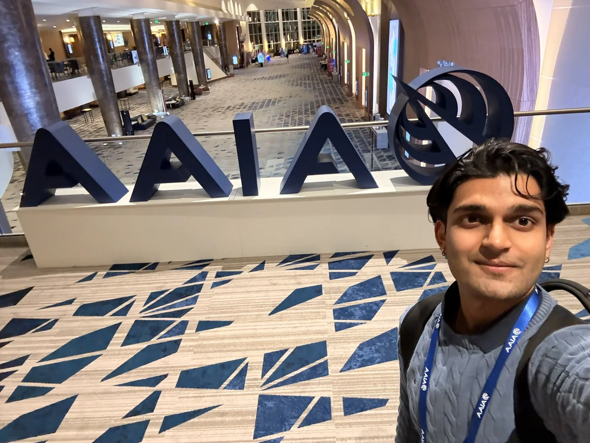
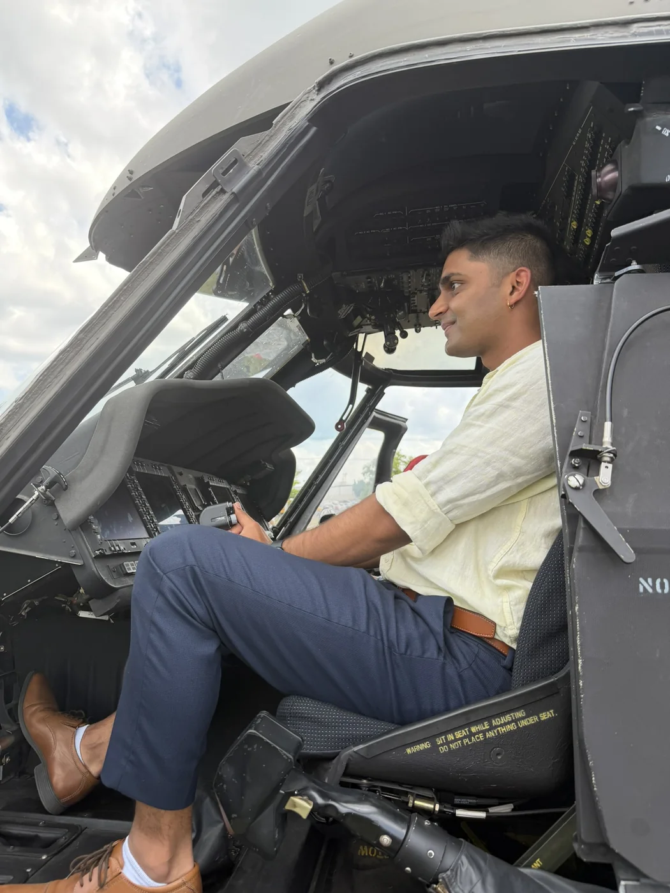

Studying aerospace engineering through the ERAU Honors Program.

Aerospace Engineering Portfolio
Haitish Gandhi
I'm an aerospace engineer who likes making complicated flight systems easier to understand, build, and test. Systems engineering is my home base, with hands-on work across research, avionics, robotics, and mission design.
B.S. Aerospace Engineering
ERAU Honors Program
Collins Aerospace RTX
3 AIAA papers
Profile
Systems first, with enough range to see the whole aircraft.
I care about requirements, interfaces, and test evidence. I also like staying close enough to the hardware to understand what the design is asking people to do.
Hands-on exposure to avionics test, validation, and operations systems.
Flight training shaped how I think about safety, checklists, and people in the loop.
3AIAA-published research papers
13Project write-ups, academic and industry
6Professional certifications
4Awards and honors
Publications
Published research I can share.
Three AIAA papers that reflect the kind of questions I like working on: mobility, adaptability, and practical aerospace systems.
2026
DOI: 10.2514/6.2026-1119
Design and Simulation of HyDroQuad - A Drone Quadruped Hybrid Robot
Design, propulsion modeling, and initial flight testing of a lightweight drone-quadruped platform.
2025
DOI: 10.2514/6.2025-98207
Planetary Locomotion Systems for Enhanced Mobility Through Hybrid and Adaptive Methods
A look at mobility approaches for exploration environments where one movement mode is not enough.
2024
DOI: 10.2514/6.2024-85665
Applications of Bio-Inspired UAVs for Enhanced Aerial Capabilities
Research on aircraft ideas inspired by how birds adjust and control their wings in flight.
Project Highlights
Two projects that show the range.
HyDroQuad shows the research side. NASA L'SPACE shows mission systems work. The project directory has the rest.

Hybrid aerial-ground robotic platform
From CAD and propulsion sizing to a flying 786 g prototype. HyDroQuad combines a quadruped with an aerial platform, with an initial timed flight of 6 minutes 2 seconds.
Open project detailsThermal protection proposal concept
A re-entry heat shield proposal where the challenge was turning a mission problem into requirements, architecture choices, and a clear story for review.
Open project detailsIndustry Work Projects
Industry work, shared at a public level.
These summaries stay high level, but they show the kind of problems I have worked around: test clarity, hardware readiness, team workflows, and useful handoffs.
Avionics verification and validation
Helped connect requirements to test activity, lab evidence, and clear closure notes.
Communication scenario modeling
Worked on scenarios that make communication behavior easier to test and explain.
Test workflow automation
Improved repeatable test documentation so engineering work could move with less friction.
Hardware validation troubleshooting
Supported hardware checks with careful evidence capture and practical troubleshooting.
Cross-training management tool
Built visibility around training needs so teams could plan coverage with more confidence.
Operations improvement framework
Supported shop-floor improvement work through clearer workflow, training, and follow-through.
Toolbox
Tools I use to make the decision clearer.
CATIA V5SolidWorksSiemens NXAnsys FluentMATLABPythonSTK3DEXPERIENCE
Work Experience
Places where I have practiced the work.
I have learned the most when engineering, teaching, and communication overlap.
Systems Engineering Intern
Worked around avionics verification, test evidence, hardware checks, and technical documentation.
Operations Systems Engineering Co-op
Supported operations systems through training visibility, process improvement, and practical documentation.
Tutor & Teaching Assistant | ERAU
Helped engineering students work through design tools, coding problems, and core mechanics courses.
Student Ambassador | ERAU
Helped students and visitors understand career resources through conversations, events, and outreach.
Summer Camp Counselor | ERAU
Led STEM activities and daily camp operations for K-12 students.
Beyond the projects
A closer look at aerospace.


Let's talk aerospace.
For project questions, research conversations, or opportunities, email is the best way to reach me.